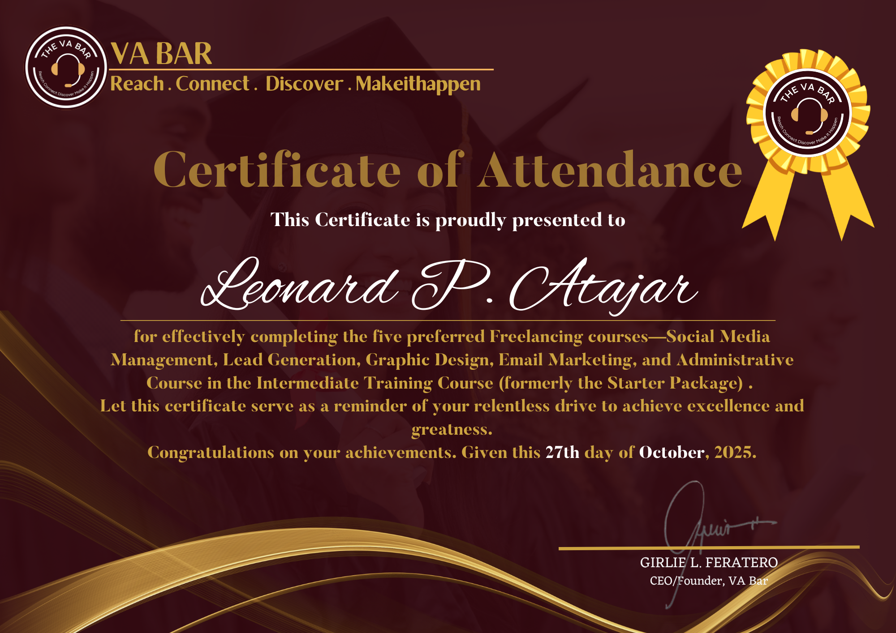
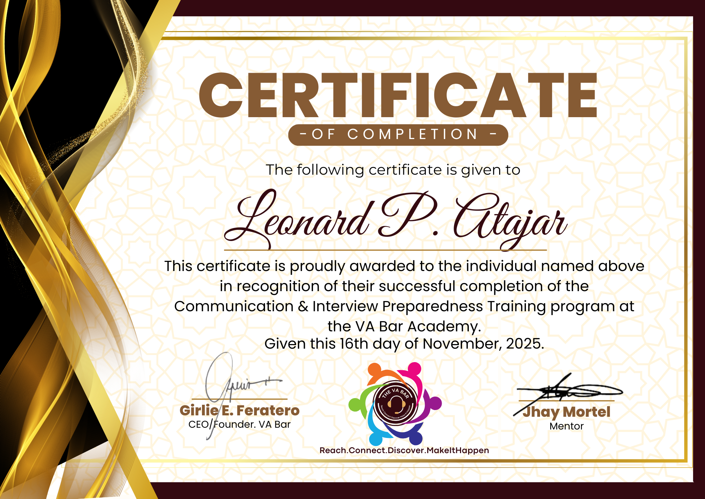

AI & Productivity
How AI Can Improve Your Daily Workflow
Discover practical ways AI tools can help virtual assistants save time, organize tasks, and improve productivity.
Hi! I'm Leonard P. Atajar. Bringing robust corporate operations, administration, and team management experience—now professionally trained as a Virtual Assistant.
Click any category below to open its dedicated view platform.

Detail-oriented professional with over 5 years of cumulative experience in operations and administration, recently trained as a Virtual Assistant through The VA Bar.
My background spans general management, admin supervision, quality assurance, workflow optimization, and leveraging cutting-edge AI technologies (like Gemini & ChatGPT) across reputable private companies. I bring enterprise-grade work ethic and modern tech capabilities straight to your remote business setup.
Years Experience
College Graduate
Professional Dedication
My solid background across various private company roles.
Completed comprehensive training covering social media management, email & calendar organization, lead generation, email marketing, productivity tools, and AI workflow integration.
Insights, tips, and practical ideas about virtual assistance, productivity, AI tools, and digital work.
Discover practical ways AI tools can help virtual assistants save time, organize tasks, and improve productivity.
Learn how virtual assistants can help businesses improve organization, efficiency, and day-to-day operations.
Practical strategies for managing tasks, communication, files, and deadlines while working remotely.
Comprehensive virtual assistance built on a strong professional background.
Streamlining business writing, market research, content planning, and workflow automation using Gemini, ChatGPT, and advanced AI models.
Inbox triage, email organization, scheduling meetings, and keeping your executive timeline orderly.
Boolean searching, web research, prospect database building, and outreach coordination via Apollo.io.
Content creation assistance, scheduling posts, community engagement, and managing Meta Business Suite.
Campaign setup, basic automation, writing effective emails using Mailchimp and Brevo.
Computer troubleshooting, workflow automation with Zapier, and website building via Wix Studio.
Equipped with professional software proficiency, AI tools, and core competencies.
Explore my work, projects, designs, and professional content across different platforms.
Explore my professional profile, achievements, experiences, and career-related content.
View My WorkExplore my graphic designs, presentations, social media graphics, short-form videos, and other creative work.
Explore my videos, creative content, tutorials, and other media projects.
View My WorkA selection of my graphic design and short-form video work created using Canva.

Creative graphic design project created using Canva.
Short-form video created using Canva.
Short-form video created using Canva.
Artificial intelligence is becoming an increasingly useful tool for virtual assistants, professionals, and business owners. When used properly, AI can help reduce repetitive work, organize information, and make everyday tasks more efficient.
AI does not have to replace the work of a professional. Instead, it can be used as a productivity assistant that helps with repetitive and time-consuming tasks.
For Virtual Assistants, this can mean spending less time performing routine work and more time focusing on tasks that require communication, organization, creativity, and decision-making.
Many daily business activities involve repetitive work. AI tools can help create drafts, summarize information, organize notes, generate ideas, and assist with routine documentation.
By reducing the amount of time spent on repetitive tasks, professionals can focus their attention on higher-value responsibilities.
Staying organized is an important part of working efficiently. AI can assist with turning information into structured task lists, priorities, summaries, and actionable steps.
This can be especially useful when managing multiple projects, clients, deadlines, and administrative responsibilities at the same time.
Communication is an important part of virtual assistance and remote business operations. AI can help professionals create first drafts of emails, reports, announcements, social media content, and other business materials.
However, AI-generated content should always be reviewed and edited by a person to make sure it is accurate, professional, and appropriate for the intended audience.
Research can take a significant amount of time. AI tools can help organize information, summarize documents, generate research questions, and provide starting points for further investigation.
AI should be treated as an assistant rather than the final source of truth. Important information should always be checked against reliable sources.
AI can also be useful when you need ideas. Virtual Assistants may use AI to brainstorm social media topics, content ideas, presentation concepts, workflows, or solutions to everyday business challenges.
The best results usually come from combining AI-generated ideas with human experience, creativity, and judgment.
Using AI effectively also means understanding its limitations. AI-generated information can sometimes be inaccurate, incomplete, or unsuitable for a specific situation.
Professionals should review AI-generated work before delivering it to clients or using it for important business decisions. Confidential and sensitive information should also be handled carefully.
AI can be a powerful addition to a Virtual Assistant's workflow. From organizing tasks and improving communication to supporting research and generating ideas, it can help professionals work more efficiently.
The goal is not simply to use more AI tools. The goal is to use the right tools in the right situations while maintaining human judgment, accuracy, and professionalism.
Discover how Virtual Assistants can help businesses save time, improve organization, reduce workload, and focus more effectively on growth and important business priorities.
Businesses today manage more tasks than ever before. From responding to emails and organizing schedules to preparing documents, managing information, communicating with clients, and maintaining online operations, everyday responsibilities can quickly become overwhelming.
This is where Virtual Assistants can provide valuable support. A Virtual Assistant, or VA, works remotely and helps businesses handle specific administrative, operational, creative, or digital tasks according to their needs.
One of the biggest advantages of working with a Virtual Assistant is the ability to delegate routine and time-consuming tasks. Instead of handling every responsibility personally, business owners and teams can assign appropriate tasks to a skilled professional.
Depending on their skills, a Virtual Assistant may assist with:
Time is one of the most valuable resources in any business. When business owners spend too much time on repetitive administrative work, they have less time available for strategy, decision-making, customer relationships, and business development.
Delegating appropriate tasks to a Virtual Assistant can create more time for high-value responsibilities. The goal is not simply to have someone complete tasks, but to create a more efficient workflow where everyone can focus on the work that matters most.
Another advantage of Virtual Assistance is flexibility. Businesses may not always need a full-time employee for every task. A Virtual Assistant can provide support based on the workload, project requirements, or specific business needs.
This can be particularly useful for small businesses, entrepreneurs, startups, and growing teams that need additional support without creating unnecessary complexity in their operations.
Organization plays an important role in maintaining a productive business. Disorganized files, missed emails, unclear schedules, and delayed administrative tasks can affect the overall workflow.
A reliable Virtual Assistant can help maintain organized systems, keep information updated, monitor routine tasks, and support consistent day-to-day operations.
Virtual Assistants can become a valuable part of a modern business by helping manage responsibilities that would otherwise consume significant time and attention.
The real value of Virtual Assistance is not simply completing more tasks. It is about creating better workflows, improving organization, saving time, and giving business owners and teams more opportunity to focus on growth and important priorities.
Working remotely offers flexibility, but staying organized is essential for maintaining productivity. Here are practical ways to manage tasks, communication, files, and deadlines while working from anywhere.
Remote work gives professionals greater flexibility, but it can also create challenges when there is no traditional office environment. Without a clear system, tasks can easily be forgotten, deadlines can be missed, and important information can become difficult to find.
Having a simple and consistent organization system makes it easier to know what needs to be done, when it needs to be done, and where important information is located.
One of the simplest ways to stay organized is to maintain a clear task list. Instead of trying to remember every responsibility, write tasks down and prioritize them.
A useful task list can include:
Digital files can quickly become difficult to manage when working remotely. Documents, images, spreadsheets, presentations, and other files should have a clear and consistent structure.
Creating folders based on clients, projects, departments, or categories can make information easier to locate. Using consistent file names can also reduce confusion and save time when searching for documents.
Remote professionals often communicate through email, messaging platforms, video meetings, and project management tools. Without organization, important messages can easily get lost.
Make it a habit to review messages regularly, respond to important requests, and keep track of follow-up items. Clear communication helps prevent misunderstandings and keeps projects moving forward.
Not every task has the same level of importance. Organizing work according to priority can help prevent important deadlines from being overlooked.
A simple approach is to identify urgent tasks, important tasks, and tasks that can be scheduled for later. Combining this with calendar reminders can provide a clear picture of upcoming responsibilities.
A consistent routine can make remote work more manageable. Setting specific working hours, planning the day ahead, and taking regular breaks can help maintain focus and productivity.
The exact routine will depend on the person and the type of work, but having a predictable structure can make it easier to stay focused and avoid unnecessary distractions.
Staying organized while working remotely does not require a complicated system. Simple habits such as maintaining a task list, organizing digital files, managing communication, and tracking deadlines can make a significant difference.
The goal is to create a workflow that is easy to maintain and allows you to work efficiently. With the right organization habits, remote professionals can stay productive while maintaining flexibility in their work environment.
Professional certifications and achievements that demonstrate my skills and expertise.


Ready to partner with an experienced operations professional turned Virtual Assistant? Get in touch via email, phone, or LinkedIn.
Thank you for reaching out. I've received your message and will get back to you as soon as possible.
— Leonard P. Atajar